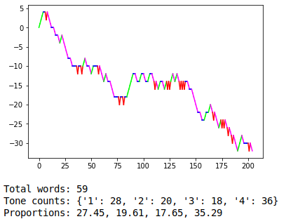

In 2018 I was in Beijing for 6 months doing an intensive Mandarin Chinese training course. I learned a lot, and made many new friends that I am incredibly thankful for.
For those of you who don't know, spoken Mandarin Chinese (and other dialects of Chinese) have one huge difference from spoken Engish: there are these things called TONES.
The words in Chinese are made up of syllables (no surprise there). The kicker is that each syllable in Chinese can have up to 5 tones (flat, rising, "falling-rising", falling, clear) and each tone can impart different meanings. Originally, the Chinese language only consisted of the written characters you see everywhere and can't understand. Eventually, to make it easier to learn (especially for us foreign, romanized casuals), a notation known as Hanyu Pinyin was developed which describes how a word is to be pronounced, including the words respective tone. A simple example:
I won't go into the details of how the pronounciation works, or just how confusing the Chinese language can be. Just know that one day I had the idea to plot the accents on the Pinyin to see what the "landscapes" of the Chinese language looked like. The results were quite interesting; it turns out that the Chinese language mainly consists of the falling 4th tone! Click the writeup link above for a more detailed report.
